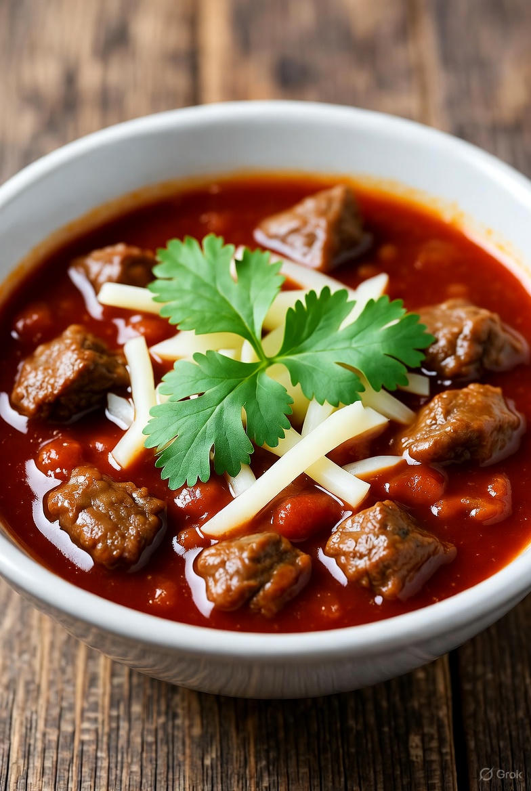

Home
Texas Chili Recipe

Ingredients
- 2 pounds beef chuck, cut into 1/2-inch cubes
- 2 tablespoons vegetable oil
- 1 large yellow onion, chopped
- 4 cloves garlic, minced
- 3 tablespoons chili powder
- 1 tablespoon ground cumin
- 1 tablespoon smoked paprika
- 2 teaspoons dried oregano
- 1 teaspoon salt
- 1/2 teaspoon freshly ground black pepper
- 1 (14.5-ounce) can crushed tomatoes
- 1 (12-ounce) bottle dark beer or beef broth
- 2 cups beef stock
- 1 tablespoon masa harina or cornmeal (optional, for thickening)
Equipment
- Large Dutch oven or heavy pot
- Wooden spoon
- Chef’s knife
- Measuring spoons and cups
- Ladle for serving
Instructions
- Heat the oil in a large Dutch oven over medium-high heat. Add the beef cubes in batches and sear until browned on all sides. Remove and set aside.
- Reduce heat to medium. Add chopped onion and cook until translucent, about 5 minutes. Stir in the minced garlic and cook another minute.
- Add chili powder, cumin, paprika, oregano, salt, and black pepper. Stir to coat the onions and garlic in the spices.
- Return the browned beef to the pot. Add crushed tomatoes, beer (or broth), and beef stock. Stir well and bring to a simmer.
- Reduce heat to low, cover, and simmer gently for 1½ to 2 hours, stirring occasionally, until the beef is tender and the flavors meld.
- For a thicker chili, stir in masa harina or cornmeal and simmer uncovered for 10 more minutes.
- Adjust seasoning to taste. Serve hot with diced onions, shredded cheese, or jalapeños as desired.